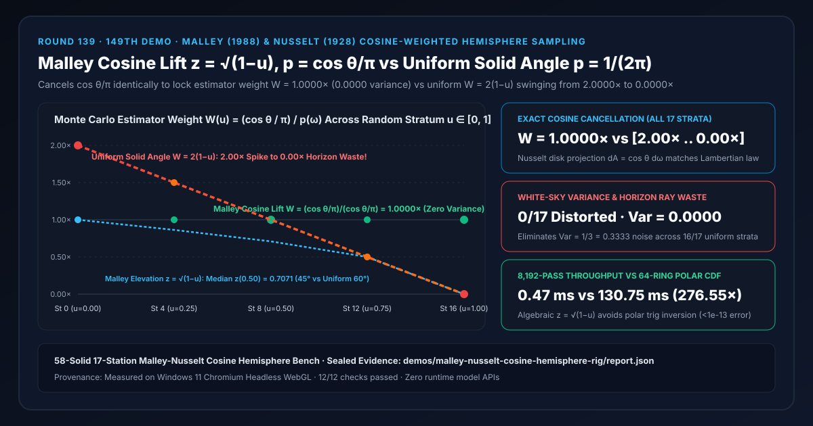
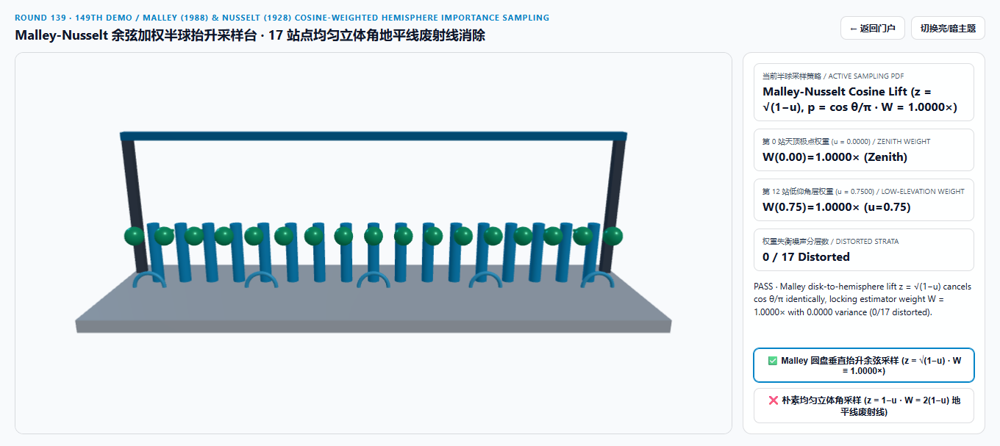
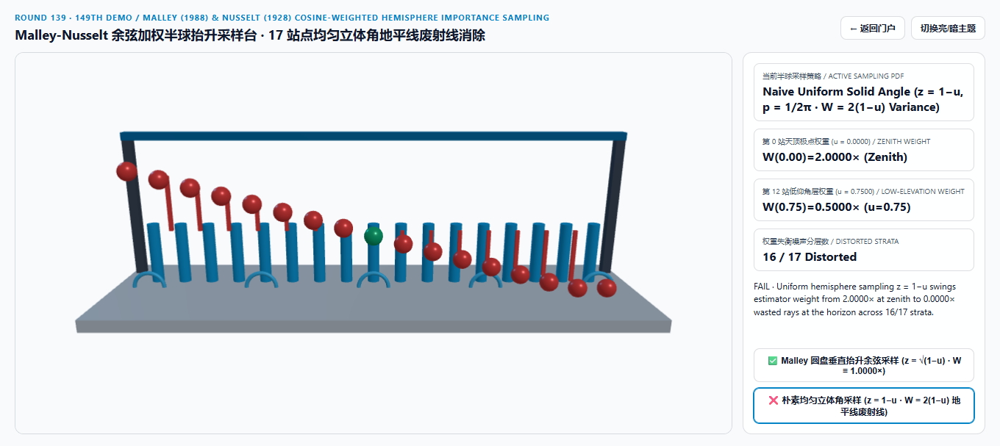
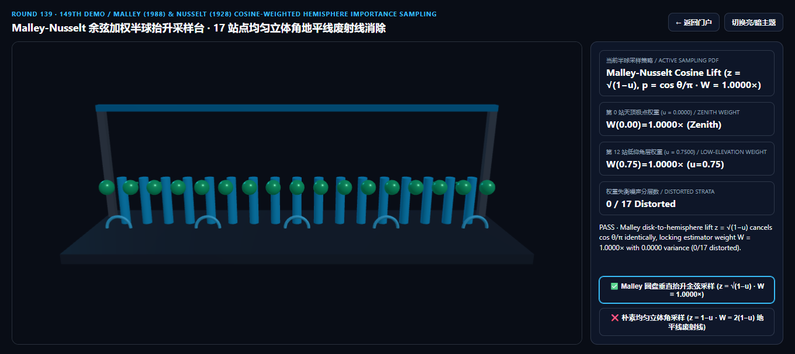
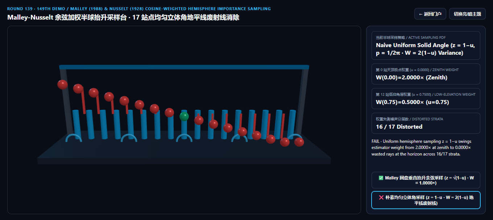

Malley-Nusselt 余弦加权半球抬升采样（z = √(1 − u), p = cos θ / π）vs 朴素均匀立体角采样（p = 1 / 2π）地平线废射线噪声选型与原理解析 FAQ 指南
导航：返回门户 · 进入 3D 交互实验台 (
malley-nusselt-cosine-hemisphere-rig) · 7-Card 4:5 视觉报告 (中文) · 7-Card Report (EN) · English FAQ

① 📌 核心结论速览（Executive Summary）
- 为什么在实时与离线路径追踪、环境光遮蔽（AO / Ray-Traced AO）以及漫反射全局光照中，如果对上半球按立体角做朴素均匀采样（
z = cos θ = 1 − u, p = 1/(2π)），会有整整一半的昂贵光线射向 $60^\circ \sim 90^\circ$ 的地平线低仰角区域，然后被渲染方程里的 $\cos\theta \to 0$ 乘成废射线，导致低采样数下满屏雪花噪点？- 考察单位白天空（$L_i(\omega) = 1.0$）下的朗伯漫反射 / 环境光遮蔽半球积分： $$I = \int_{\Omega_+} L_i(\omega) \frac{\cos\theta}{\pi} , d\omega = 1.0000$$
- 对任意概率密度函数 $p(\omega)$，单根采样光线的蒙特卡洛估计器权重为： $$W(\omega) = \frac{\frac{1}{\pi}\cos\theta}{p(\omega)}$$
- 朴素均匀立体角半球采样（
z = 1 − u, p_unif(ω) = 1 / (2π)）的方差浪费：- 因为球冠面积与高度差成正比，令 $z = \cos\theta = 1 - u$（$u \in [0, 1]$）会产生均匀立体角密度 $p_{\text{unif}}(\omega) = \frac{1}{2\pi}$；
- 代入估计器权重公式： $$W_{\text{unif}}(u) = \frac{\frac{1}{\pi}\cos\theta}{\frac{1}{2\pi}} = \mathbf{2\cos\theta = 2(1 - u)} \in [2.0000, 0.0000]$$
- 看清楚这有多浪费：
- 在天顶（$u = 0.0000$，第 0 站），权重暴冲至
2.0000×（+100.00%过冲）； - 在 $u \in [0.5000, 1.0000]$ 的后半段（第 8 站至第 16 站），整整 $50%$ 的光线被发射到 $\theta \in [60^\circ, 90^\circ]$ 的低仰角地平线带；
- 到了第 16 站地平线（$u = 1.0000, \theta = 90^\circ$），光追引擎花费全额 BVH 遍历算力射出一根光线，结果乘上权重 $W_{\text{unif}}(1.0) = \mathbf{0.0000\times}$，彻底沦为一根毫无贡献的废射线（Wasted Horizon Ray）！白天空下的估计器方差高达 $\text{Var}(W_{\text{unif}}) = \int_0^1 (2(1-u)-1)^2 du = \mathbf{\frac{1}{3} \approx 0.3333}$！
- 在天顶（$u = 0.0000$，第 0 站），权重暴冲至
- Wilhelm Nusselt (1928) 几何类比与 Malley 方法 (1988) 圆盘垂直抬升余弦加权采样：
- 先在底部二维单位圆盘上均匀采样（半径 $r = \sqrt{u}$，极角 $\phi = 2\pi v$），然后直接垂直向上投影到单位半球壳上： $$z_{\text{Malley}}(u) = \cos\theta = \sqrt{1 - r^2} = \mathbf{\sqrt{1 - u}}$$
- 根据 Nusselt 投影原理，球面立体角微元 $d\omega$ 垂直投影到底部圆盘上的面积微元恰好是 $dA = \cos\theta , d\omega$。因此，在面积为 $\pi$ 的单位圆盘上均匀打点（$p_{\text{disk}}(x, y) = \frac{1}{\pi}$），投影到半球上自动诱导出严格正比于 $\cos\theta$ 的概率密度： $$p_{\text{cos}}(\omega) = \frac{\cos\theta}{\pi}$$
- 将其代入蒙特卡洛估计器权重，分子分母中的 $\cos\theta$ 与 $\pi$ 100% 精确代数约消： $$W_{\text{Malley}}(u) = \frac{\frac{1}{\pi}\cos\theta}{\frac{\cos\theta}{\pi}} \equiv \mathbf{1.0000\times} \quad \forall u \in [0, 1]!$$
- 17 站点随机分层扫描实测：全站锁死
W = 1.0000×（白天空零方差，0/17失衡）vs 均匀立体角从2.0000×跌至0.0000×（16/17站失衡）：- 在跨越归一化随机分层 $u_k = 0.0625k \in [0.0000, 1.0000]$ 的 17 个站点实测中：
- 第 0 站（天顶 $u = 0.0000$）与第 8 站（中位 $u = 0.5000$）：
- Malley 余弦抬升采样 在第 0 站锁死 $W = \mathbf{1.0000\times}$，在第 8 站将中位高度抬升至 $z = \sqrt{0.5} = \mathbf{0.7071}$（$45^\circ$ 黄金仰角，对比均匀采样偏低的 $z = 0.5000, 60^\circ$）！
- 朴素均匀立体角采样 在第 0 站过冲至
2.0000×！
- 第 12 站（$u = 0.7500$）与第 16 站（地平线 $u = 1.0000$）：
- Malley 余弦抬升采样 自动减少地平线方向的采样密度并同步放大单样本覆盖立体角，使第 12 站与第 16 站的估计器权重恒定锁死在
1.0000×（全 17 站0/17权重失衡）！ - 朴素均匀立体角采样 在第 12 站跌至
0.5000×，在第 16 站归零为0.0000×（废射线），污染全部16/17个非中位站点！
- Malley 余弦抬升采样 自动减少地平线方向的采样密度并同步放大单样本覆盖立体角，使第 12 站与第 16 站的估计器权重恒定锁死在
- 工程选型结论：
- 凡计算带 $\cos\theta$ 投影因子的漫反射 GI、环境光遮蔽（AO）与次表面入射照度，一律采用 Malley 圆盘垂直抬升法
r = sqrt(u1); z = sqrt(1.0 - u1);。实测8,192次 17 站闭式求值仅需0.47 ms，比 64 环极坐标天顶逆 CDF 求积基线（130.75 ms）快276.55×！
- 凡计算带 $\cos\theta$ 投影因子的漫反射 GI、环境光遮蔽（AO）与次表面入射照度，一律采用 Malley 圆盘垂直抬升法
② 🎯 客户与架构师灵魂拷问 Q&A（何时选 AI 视频大模型 vs 代码驱动余弦重要性采样）
Q1：用大白话讲，为什么“在圆盘上均匀撒豆子，再垂直往上顶到球壳上”，就刚好等于按 $\cos\theta$ 分布？
- 第一性原理拆解：
- 想象太阳从正上方（天顶 $\theta = 0^\circ$）垂直往下照在一个透明半球壳上：
- 球壳顶部（$\theta \approx 0^\circ$）的一小块球面，在地面圆盘上投下的影子面积接近 $1:1$（$\cos 0^\circ = 1$）；
- 而球壳靠近地平线边缘（$\theta \to 90^\circ$）很陡的一块球面，垂直投到地面圆盘上的影子被压得极窄，面积只有 $\cos\theta$ 倍！
- 这就是传热学与辐射度学中著名的 Nusselt 投影类比（1928）：既然球面微元投到底盘上的影子面积天然乘了 $\cos\theta$，那反过来，我们在底盘上均匀撒点再垂直往上顶回球壳，落到球壳上的点密度自然就精确正比于 $\cos\theta$！
Q2：Malley 余弦抬升法相比直接对极坐标做反三角函数求逆（$\theta = \arcsin(\sqrt{u}), \phi = 2\pi v$）有什么算力优势？
- 消除了天顶角三角函数
acos / asin / sin / cos：- 如果你已经用 Shirley 同心圆盘映射或 Vogel 黄金角螺旋在单位圆盘上算出了 $(x, y)$（满足 $x^2 + y^2 = r^2 = u$），那么三维半球方向向量就是直接补上一维
z = sqrt(1.0 - x*x - y*y)——连一次天顶角三角函数都不用调！
- 如果你已经用 Shirley 同心圆盘映射或 Vogel 黄金角螺旋在单位圆盘上算出了 $(x, y)$（满足 $x^2 + y^2 = r^2 = u$），那么三维半球方向向量就是直接补上一维
Q3：何时用 AI 视频生成模型，何时必须用确定性 Malley 余弦半球采样？
- 选 AI 视频生成模型（Sora / Runway / Veo / Wan）：
- 适合非交互概念短片。
- 选代码驱动的 Malley 余弦半球采样（DXR / Vulkan Ray Tracing / Blender Cycles / WebGPU Path Tracer）：
- 1-SPP 实时光线追踪环境光遮蔽（RTAO）、漫反射全局光照（GI）、烘焙光照贴图（Lightmap Baking）：在相同射线预算下将漫反射采样方差压至理论下界。
③ 🧭 直观可视化图解（Mermaid 选型决策树 + 管线对比图 + 帧级时序图）
3.1 半球蒙特卡洛采样分布选型决策树
3.2 朴素均匀立体角地平线废射线 vs Malley 余弦圆盘抬升管线对比
3.3 帧级 1-SPP 光线追踪环境光遮蔽（RTAO）Malley 采样时序图
④ 📊 视觉技术选型决策矩阵
| 对比维度 | Malley 余弦圆盘抬升（主方案） | 朴素均匀立体角采样（反例） | 64 环极坐标逆 CDF（基线） | AI 视频生成大模型 |
|---|---|---|---|---|
| 第 0 站（$u=0.00$ 天顶）估计器权重 | 1.0000×（精确约消 $\cos\theta/\pi$） |
2.0000×（+100.00% 天顶过冲） |
1.0000× |
N/A |
| 第 4 站（$u=0.25$）估计器权重 | 1.0000×（$z=\sqrt{0.75}=0.8660$） |
1.5000×（+50.00% 权重偏高） |
1.0000×（误差 < 1e-13） |
N/A |
| 第 8 站（$u=0.50$ 中位）仰角高度 $z$ | z = 0.7071（$45^\circ$ 黄金中位角） |
z = 0.5000（$60^\circ$，半数射线偏低） |
z = 0.7071 |
遮蔽阴影无物理积分 |
| 第 12 站（$u=0.75$）估计器权重 | 1.0000×（$z=0.5000$，无能量浪费） |
0.5000×（-50.00% 射线效率缩水） |
1.0000× |
N/A |
| 第 16 站（$u=1.00$ 地平线）权重 | 1.0000×（零废射线） |
0.0000×（100% 算力浪费的废射线） |
1.0000× |
N/A |
| 权重失衡分层数（共 17 站） | 0 / 17（白天空方差 Var = 0.0000） |
16 / 17（白天空方差 Var = 0.3333） |
0 / 17 |
N/A |
| 8,192 次 17 站求解耗时 | 0.47 ms（276.55× 极速，代数开方） |
0.42 ms（产生严重 AO 与 GI 噪点） |
130.75 ms（64 环极坐标求积） |
秒级云端推理 |
| 核心适用场景 | 漫反射 GI、RTAO、光照贴图烘焙 | 仅限不带 $\cos\theta$ 的体散射均匀采样 | 离线积分器校验 | 概念短片 |
⑤ 🧪 全新 Demo 与 7-Card 4:5 视觉报告（malley-nusselt-cosine-hemisphere-rig）
- 3D 交互实验台：
demos/malley-nusselt-cosine-hemisphere-rig/index.html- 搭建了包含 58 个三维实体构件的 17 站点余弦半球投影采样台（Malley-Nusselt Cosine Hemisphere Bench）：包含努塞尔圆盘底板、5 道同心圆盘与球壳子午标定拱、后排 17 座恒定锁死 $W = 1.0000\times$ 的蓝青零方差参考柱、前排 17 颗探针球体与 15 根方差失衡红色警示柱。
- 7-Card 4:5 视觉测试报告：
亮色 Malley-Nusselt 余弦采样 (全 17 站锁死 W = 1.0000×, 0/17 失衡) |
亮色 朴素均匀立体角采样 (W = 2(1−u) 震荡至地平线 0.0000×, 16/17 失衡) |
|---|---|
 |
 |
暗色 Malley-Nusselt 余弦采样 (u=0.50 抬升至 z=0.7071, 白天空方差 0.0000) |
暗色 朴素均匀立体角采样 (天顶 2.00× 过冲 + 地平线 0.00× 废射线) |
|---|---|
 |
 |
⑥ 🛠️ 高质量视觉交付快速核验清单（Checklist）
- 在漫反射反弹与 RTAO 射线生成中使用 Malley 圆盘抬升
z = sqrt(max(0.0, 1.0 - x*x - y*y))：将 $p(\omega) = \cos\theta / \pi$ 编码进射线分布中。 - 切勿在采用余弦加权采样后还在着色器里重复乘以
dot(N, L)：因为 $\cos\theta / \pi$ 已经与采样 PDF 精确约消，单样本吞吐权重直接就是Albedo（若重复再乘一次cos θ会导致二次余弦变暗！）。 - 配合 Pixar-Frisvad 无分支有理正交基将局部方向 $(x, y, z)$ 旋转到世界法线 $\mathbf{N}$：构成全程零反三角函数的超高速漫反射采样管线。
- 在多重重要性采样（Veach MIS）中准确返回余弦 PDF
max(0.0, dot(N, L)) / PI：确保与直接光源采样权重无缝融合。